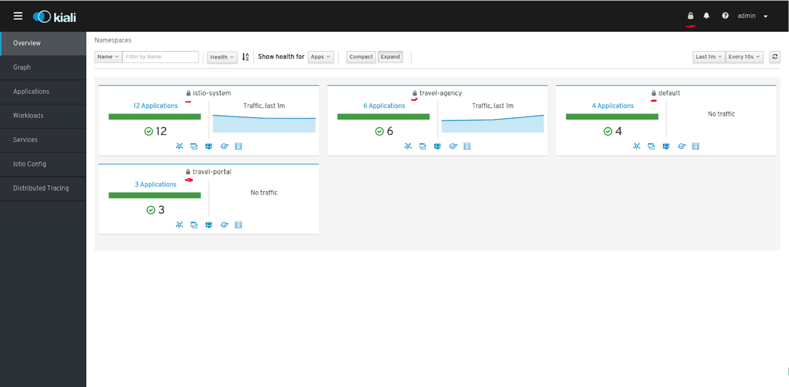

[3] Advanced challenges
[3.1] Goals
- mTLS Security
- Advanced Tracing
- Chaos Engineering
[3.2.0] mTLS travel-agency
# Enable mTLS in travel-agency
kubectl apply -f <(curl -L https://git.io/fjKnR)
# Delete mTLS in travel-agency
kubectl delete -f <(curl -L https://git.io/fjKnR)
Enable mutual TLS on travel-agency services.
[3.2.1] Check mTLS travel-agency

All services within namespace are TLS protected by Istio
[3.2.2] Mesh Policy
# Enable MeshPolicy
kubectl apply -f <(curl -L https://git.io/fjKnY)
# Delete MeshPolicy
kubectl delete -f <(curl -L https://git.io/fjKnY)
Apply mutual TLS in all namespaces
[3.2.3] Check Mesh Policy

All namespaces protected with mTLS
[3.3.0] Advanced Tracing
TBD
[3.4.0] Chaos Engineering
- Clone travel agency project
- Prepare your docker account
[3.4.1] Travel Agency v3
- Get familiar with travel_agency.go
- Create a travel-agency v3
- Personalize delays
- Use Kiali to compare with v1 and spot differences
[3.4.2] Travel Agency v4
- Travels service always queries to: flights, hotels, cars, insurances
- Modify example to allow random queries (i.e. some users may not need a car)
- Check how scenario changes when a cars service is down
End of Workshop part [3]
Congratulations !